Любимые персонажи
Кликни по маленькому фото внизу — оно откроется сверху вместе с описанием.
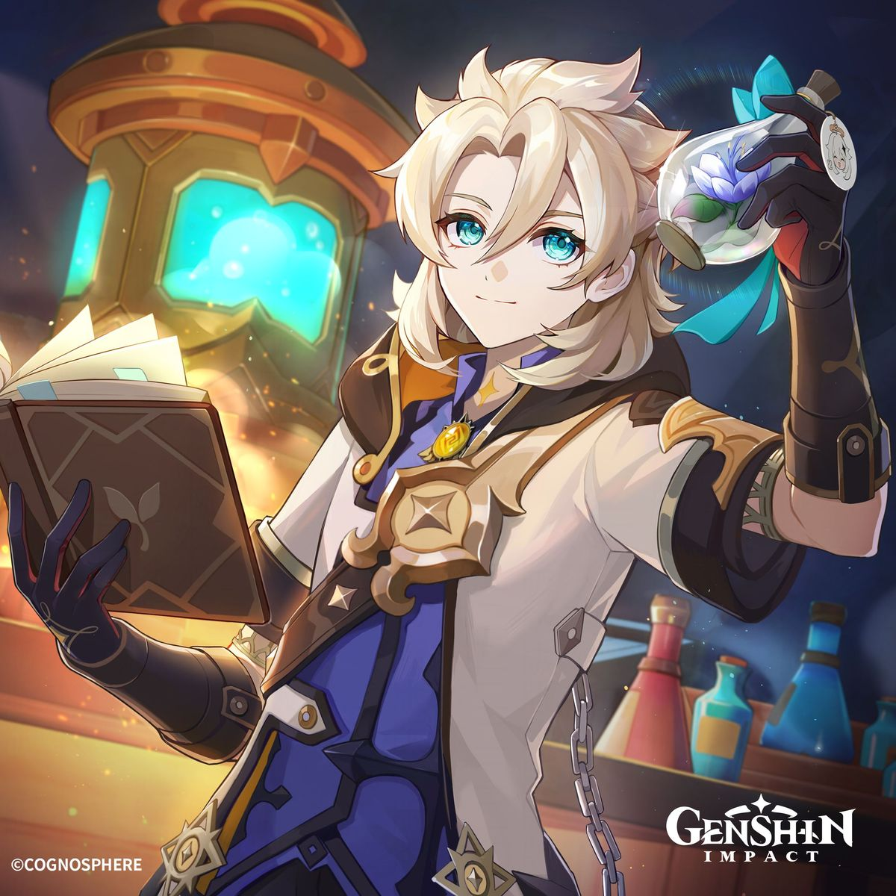
Альбедо
Искусственный человек, созданный алхимиком Рэйндоттир. Он является главным алхимиком и капитаном следственной группы Ордо Фавониус. У персонажа интересная история: он стремится постичь суть жизни и собственной природы, а также контролировать своё искусственное происхождение, которое таит потенциальную опасность. День рождения Альбедо — 13 сентября. Биологический возраст — 17–20 лет, а реальный превышает 300 лет.
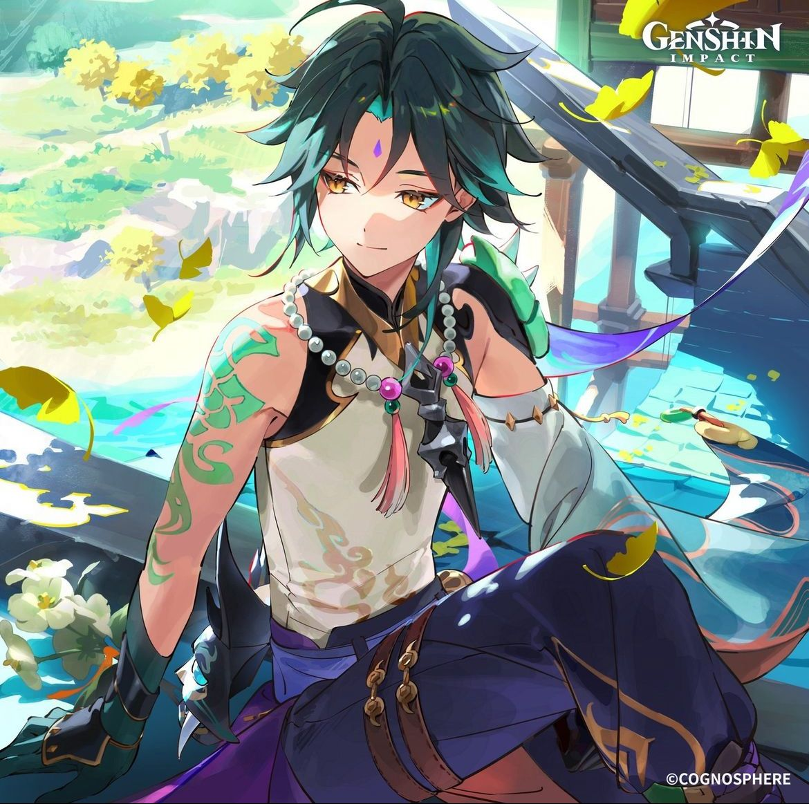
Сяо
Адепт и единственный из пяти сильнейших защитников якса, оставшийся в живых. В настоящее время он проживает на постоялом дворе «Ваншу», продолжая исполнять контракт и изолируя себя от общения со смертными.
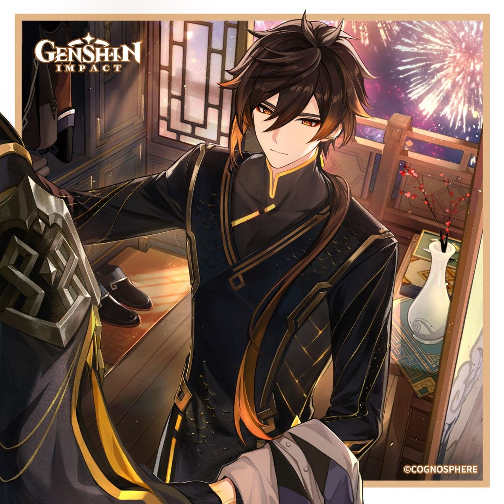
Чжун Ли
Чжун Ли — спокойный, вежливый и очень эрудированный консультант ритуального бюро «Ваншэн», где он помогает с церемониями. Но за этой маской скрывается куда более масштабная фигура: Гео Архонт Моракс, бывший правитель региона Ли Юэ и одно из семи божеств Тейвата. Позже раскрывается важная деталь: Чжун Ли решил отойти от дел и прожить жизнь смертного, чтобы проверить, готова ли Ли Юэ к самостоятельной жизни без его прямого вмешательства. Для этого он даже симулировал свою смерть во время ежегодной Церемонии сошествия.
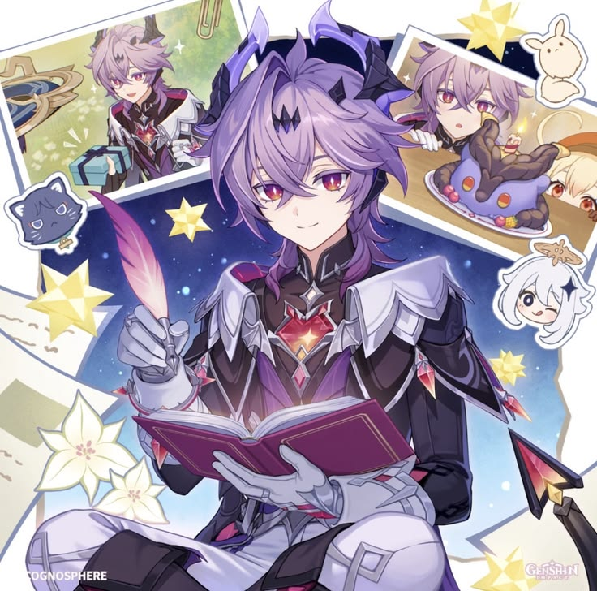
Дурин
У персонажа интересная предыстория, связанная с лором игры. Изначально существовал дракон Дурин — его создала алхимик Рэйндоттир (её ещё называют «Золотая») как неудачный эксперимент по созданию жизни. Этот чёрный змее-дракон с крыльями напал на Мондштадт около 500 лет назад. В битве его победил другой дракон — Двалин (Фамильяр Анемо Архонта Барбатоса), но ядовитая кровь Дурина отравила Двалина — так он стал Ужасом Бури. Тело дракона упало на заснеженную вершину, которая позже стала Драконьим хребтом. Позже история получила продолжение. Альбедо (ещё один ребёнок Рэйндоттир) решил не дать дракону возродиться в прежнем виде — он провёл алхимический ритуал. С помощью ядра сердца Дурина, эмбриона и плоти Бакунавы Альбедо превратил Мини-Дурина (существо из мира Симуланки) в человека. Так появился игровой персонаж.
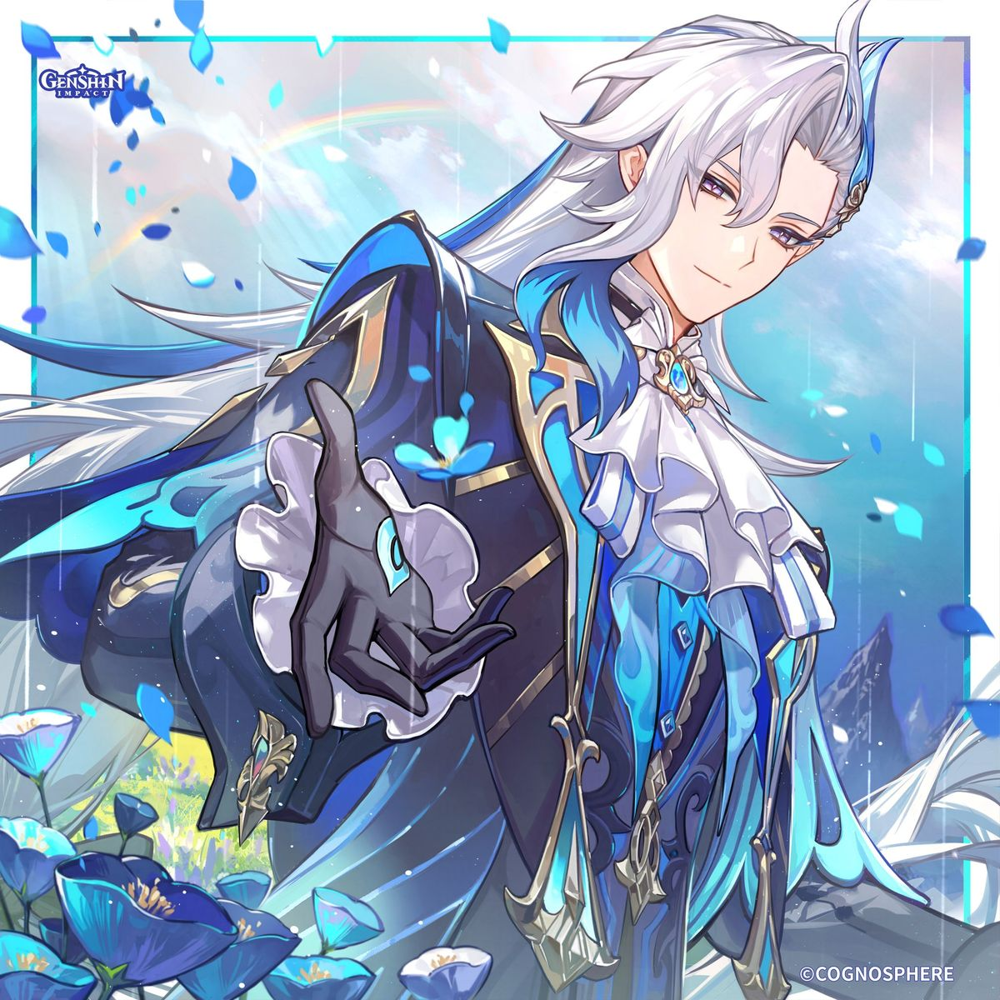
Нёвиллет
Нёвиллет известен своей беспристрастностью и неприступностью. Он серьёзен и отчуждён, редко улыбается и держится на расстоянии от людей. При этом он искренне переживает за своих друзей и судьбу Фонтейна. По сюжету он — реинкарнация древнего Повелителя Гидродраконов, чья сила была узурпирована Гидроархонтом Фокалорс. После того как Фокалорс пожертвовала собой, разрушив божественный трон, власть над Гидро вернулась к Нёвиллету, и он стал «истинным драконом». Нёвиллет также известен своей дружбой с мелюзинами — древней расой Фонтейна. Он привёл их в Кур-де-Фонтейн, чтобы они жили наравне с людьми, и мелюзины относятся к нему как к отцу.
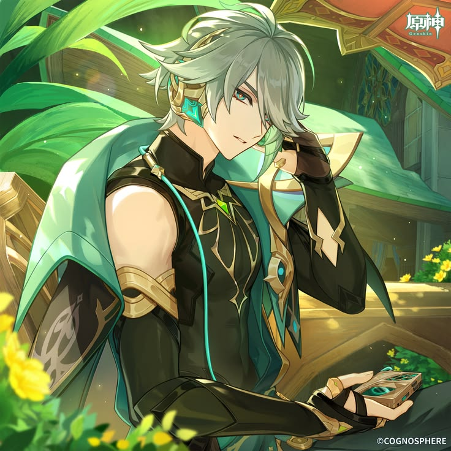
Аль-Хайтам
Аль-Хайтам — высокий мужчина крепкого телосложения с седыми волосами, имеющими бледно-бирюзовые пряди, и светло-бирюзовыми глазами, подведёнными оранжевой тушью. Он носит большие золотые наушники с бирюзовыми и изумрудными вставками, а его наряд сочетает чёрный топ с разрезным высоким воротом, тёмные брюки, кейп с бирюзовым подкладом и многочисленные золотые украшения. Глаз Бога прикреплён к кейпу у левого плеча. По характеру он свободолюбив и действует исключительно рационально, интересуясь только тем, что его действительно увлекает. Он не стремится к карьерному росту и часто остаётся в тени, что порождает вокруг его персоны немало разговоров.
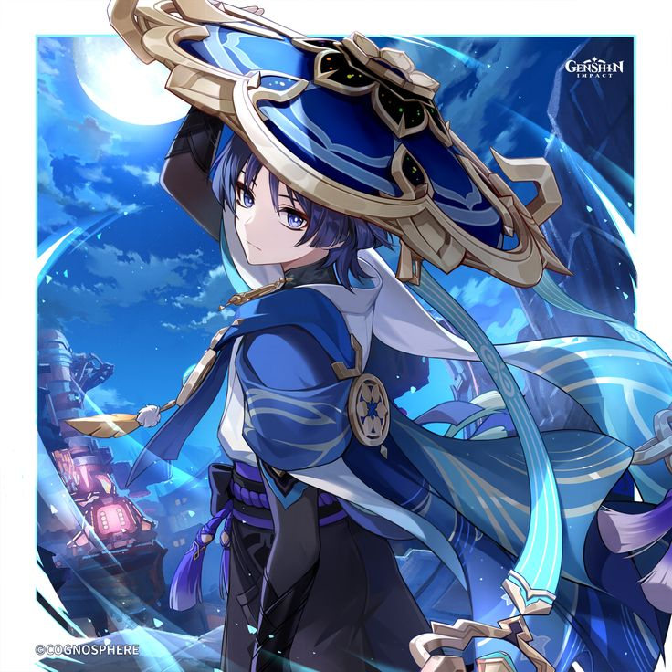
Странник
Изначально Скарамучча был создан Райдэн Эи как прототип марионетки для сёгуна. После того как его создатель оставила его, Скарамучча, считая себя брошенным, бродил по миру, пока не был освобождён самураем Кацураги. Позже он присоединился к Фатуи и стал Шестым из Предвестников под именем Сказитель. В Сумеру он выступил главным антагонистом, попытавшись заменить Нахиду на посту Архонта, но был побеждён Путешественником. После этого он попытался стереть память о себе из Ирминсуля (всеобщего древа памяти), но это привело лишь к тому, что весь Тейват забыл о нём. В результате Скарамучча отказался от всех прошлых титулов и имён, став просто Странником — скитальцем без дома и цели.
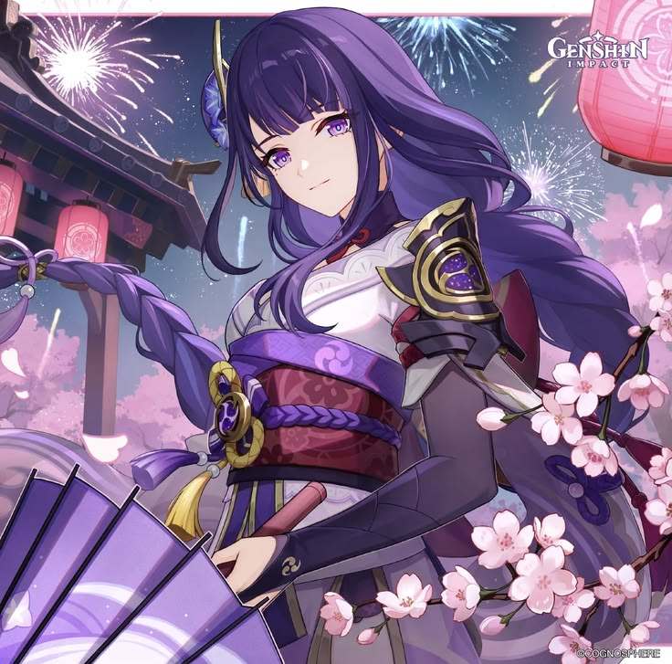
Сёгун Райдэн
Изначально Райдэн представлена как суровый и авторитарный правитель, стремящийся к «вечности». Однако по мере развития сюжета раскрывается, что её сестра-близнец Макото (настоящий архонт Инадзумы) была убита 500 лет назад, и Эи, чтобы избежать подобной трагедии, спрятала своё сознание в марионетке. Конфликт между сознанием и программированием марионетки достигает кульминации в квестовой линии «Переходные сны», после чего сёгун принимает более дальновидный подход к управлению.
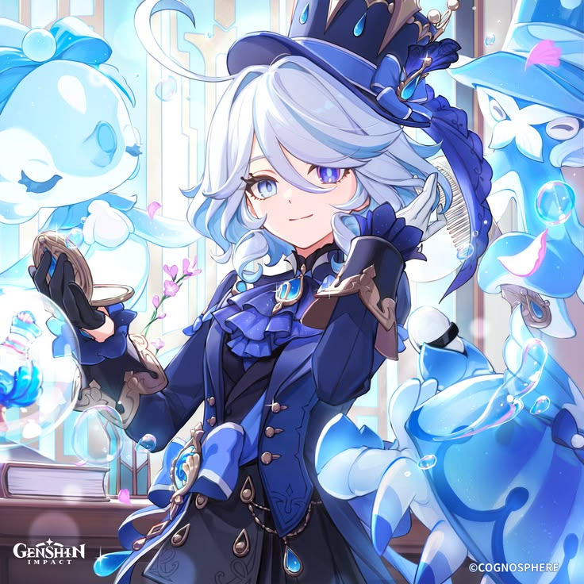
Фурина
Фурина — это «человеческая» часть настоящего Гидро Архонта Фокалорс. За 500 лет до начала событий игры Фокалорс разделила свою божественную и человеческую сущности, чтобы обмануть Небесный Порядок и предотвратить пророчество о потопе, который должен был уничтожить Фонтейн. Фурина была проклята бессмертием и вынуждена вечно играть роль Архонта, поддерживая его облик. В конце сюжетной арки Фокалорс устраивает собственную казнь, освобождая Фурину от проклятия и позволяя ей жить собственной жизнью. В игре Фурина представлена как экстравагантная и непредсказуемая личность, которую жители Фонтейна воспринимают скорее как знаменитость, чем как суровое божество. Она часто выступает в оперном театре Фонтейна.
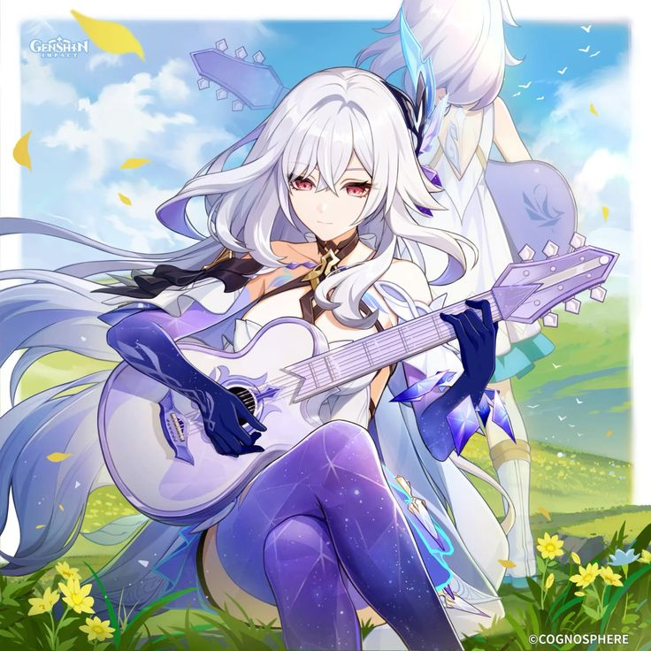
Скирк
Скирк — одинокая воительница, обладающая огромной силой и владеющая энергией Бездны. Она была ученицей Сурталоги — одного из Пяти Грешников Каэнри'а, который спас её и воспитал как равного себе соперника. После обучения Сурталоги открыл границу между мирами и отправил Скирк в Тейват. Вместе с ведьмой Алисой она создала себе новую личность, назвавшись пришедшей «из глубин земли». Её цель — стать достаточно сильной, чтобы победить Сурталоги, и вернуться к нему для сражения. В сюжете Скирк впервые появилась в задании легенд, а как игровой персонаж стала доступна в патче 5.7 («Пришествие Звезды пустоты»).
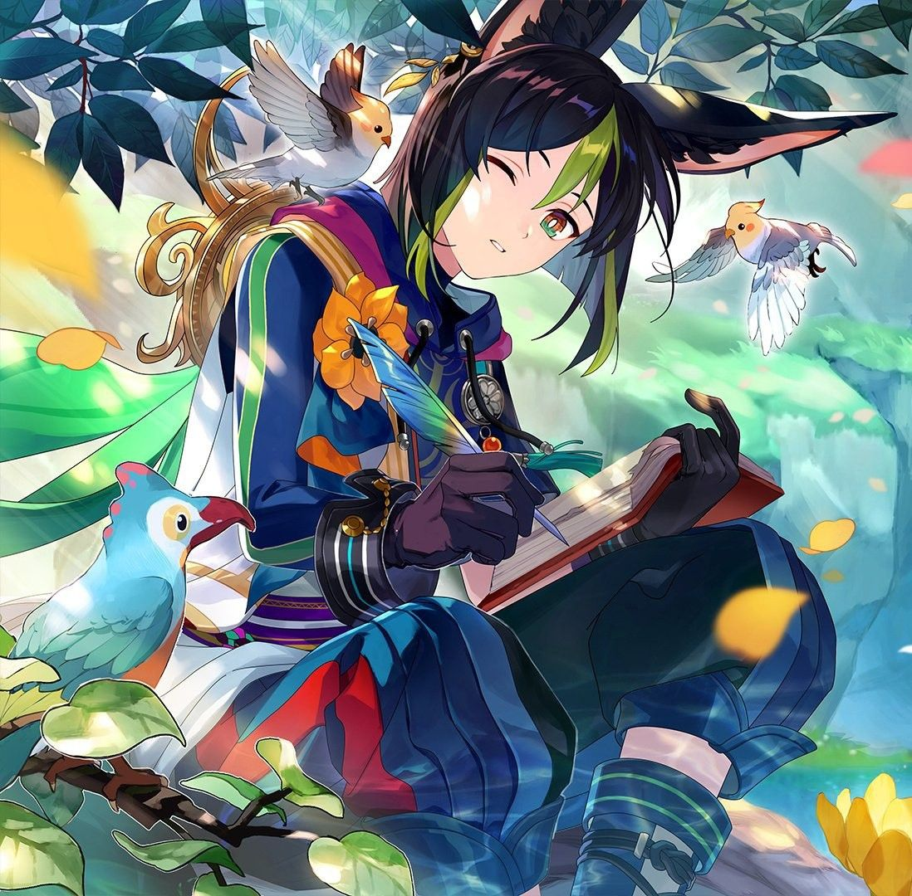
Тигнари
Он служит лесным стражем в лесу Авидья в регионе Сумеру, где ухаживает за лесом и следит за порядком. Тигнари — учёный-ботаник, искренний и добросердечный наставник, который умеет находить подход даже к самым непонятливым ученикам.
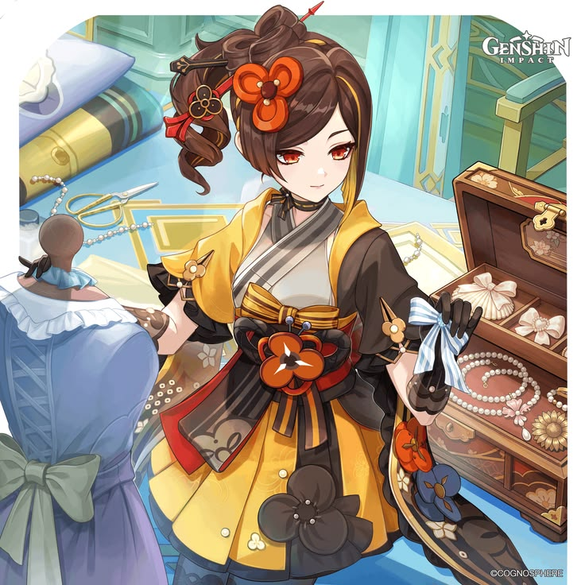
Тиори
Тиори родилась в Инадзуме, но переехала в Фонтейн, чтобы самостоятельно устроить свою жизнь. Она выросла в обеспеченной семье купцов, но из-за занятости родителей стала самостоятельной и своевольной. Её увлекало создание тканей, и в итоге она решила посвятить этому жизнь, несмотря на трудности в обучении у мастеров. В ночь перед отъездом в Фонтейн Тиори получила свой Глаз Бога. В новом городе она быстро прославилась благодаря дерзким идеям: использовала нестандартные ткани, создавала женские наряды с элементами мужской одежды и наоборот. Со временем её магазин стал популярным, а сама Тиори — влиятельной фигурой в Фонтейне. Она также использовала свои связи для сбора сплетен и даже сотрудничала с властями, чтобы предотвращать преступления. При этом характер у Тиори вспыльчивый: она не терпит грубых людей и может выгнать их из магазина.